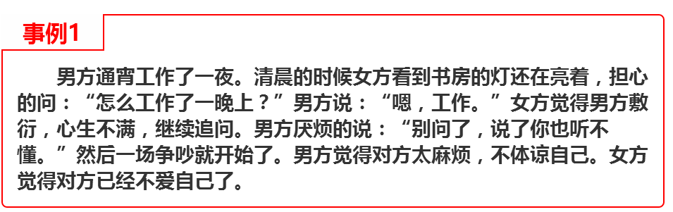

- 返回顶部
- 4006-299-520
- 在线咨询
- 微信公众号

“老师，前两天我女朋友跟我提了分手，原因是说我不理解她。冬天送手套，夏天送西瓜，过生日送花，每个节日我都没落下，我还不够理解她吗？我哪里不够理解她？”
我的一个学员跟他女朋友分手了，女方说他不理解她。这个学员对他女朋友非常好，可是他们之间还是经常发生分歧。为什么百依百顺还是会发生分歧？你已经做到了最好，她也并没有无理取闹，只是你们思维方式的差异让你不懂女人心。
男女思维方式有本质的不同，男性的思维方式侧重于理性思维，而女性的思维方式则偏重于感性思维。我们没必要去批判这两种思维方式谁比谁更优越，这是毫无意义的。你现在要学习的是这两种思维方式的差异在哪里。
认知心理学认为：女性在说话的时候平均使用五种语调，而男性平均只使用三种。因此，男性听不出女性的某些语调变化，觉得她一直在重复一个话题，很厌烦。而女性也会觉得男性不理解自己。
进化心理学认为：男性思维方式接近直线，准确而简洁，发现问题解决问题的目的性比较强烈；而女性思维方式接近曲线，她关心的是由问题引发的改变，强调感觉，而不是问题本身。
看明白上面的的解释，我们再来看事例1，很明显这就是男女思维方式的差异。男方听不懂女方的关心，只觉得女方麻烦，无法解决问题却喋喋不休，女方也听不懂男方的劳累，由问题本身联想到了男方不爱她，由此引发了他们之间的争吵。
读懂女人心的难点在于解读对方语言中的“潜台词”，这是男女思维方式不同的原因。要读懂女性的“潜台词”，就要彻底理解女性思维。
在第一部分我们已经讲解过，女性的思维方式是接近曲线的，她们在看待问题的时候，更多的会关注问题背后的情感关系，关注针对这件事情自己的感受，而不是问题的本身。她们在表达方式上，通常也不喜欢直截了当的说出自己的想法，而是委婉的旁敲侧击，通过暗示来表达。
就此来说，当你的女朋友跟你说一句情绪色彩比较浓的话的时候，你就要注意了，尤其是带有抱怨、惊讶、赞叹等语气的话，你要好好去思考她真正想表达的意思，不要只看表面的意思，去试着用曲线思维想想其他的意思。
比如女人说：“你从来都不陪我吃饭！”她的潜台词其实是“你可以陪我去吃饭吗？”她只是在表达自己的感觉，如果这时候你的关注点是她抱怨里的事实，反驳她你经常陪她吃饭，这就是鸡同鸭讲了，必然会引起争吵。
当你的女朋友在向你抱怨的时候，不要去反驳她抱怨的内容，而是根据她抱怨的内容去做她期望的事情。她指责你“从来不陪她吃饭”，你就应该去回复“是我错了，今天晚上给我个陪你吃饭的机会来表达我的歉意吧”。
在这里，我们不可能分析每一句女性话语里的“潜台词”，但只要你学会用曲线思维去解读，你会很容易明白她真正想表达的意思。
有时候你会觉得你女朋友话很多，遇到一件小问题，要不断的去描述自己的感受，自己针对这件事情的看法，去重复问题的细节，明明问你怎么办，却不认同你的答案，自己喋喋不休说个没完没了，简直无法沟通。
女人在遇到问题的时候，需要找人好好说出来才能受到心理安慰。她会去描述这个问题的细节、带给她的影响等等，单纯表达自己面对这个问题的感受，而不是真的让你去帮她解决这个问题。
你只要带着耳朵去认真倾听，让她感觉到她是被理解、被支持的就可以了。在你全神贯注的倾听中，她能感受到你对她的爱意与担忧，她就会得到安慰。
这是网上比较流行的一张图，一针见血的表达出女性丰富而跑偏的心理活动。
有时候你心情不好，不想说话，而你的女朋友在不断的问你你心情不好的原因。你会觉得她烦，不知道给你私人空间。其实在女性的世界里，沉默就意味着不信任。你一沉默，她就会恐惧，会胡思乱想，想你心情不好的原因是不是因为她做错了什么，你是不是准备离开她了。然后她更是不停的问你，让你更烦，更不想跟她说话。
其实在与女性的相处过程中，你应该能感受到，女性天生爱胡思乱想。你越是闭口不谈，她越是张皇失措，胡思乱想。不管有什么事情，你最好都跟她解释明白，即使不想解释，也要说明白事情与她无关，只是你自己的原因，想自己静静，以打消她的恐惧心情。
曾经有个学员，是个疯狂的足球迷，在跟女朋友聊天的时候，不断的去描述他的主队的悠久的历史，昨晚比赛的精彩，想跟他的女朋友分享他的喜悦与热爱。但他的女朋友对足球一点都不感兴趣，连球场上有几个人都不清楚，根本无法跟他产生共鸣，只能无聊的玩手机。
在聊天的过程中，你要注意到她的感受，不要自己在那里high的不行，而对方只能无聊的玩手机。一旦发现这个话题对方不感兴趣，你要适时的转变话题，去寻找她感兴趣的东西，拉回她的注意力。
不单单是聊天，在两性交往的过程中，注意对方的感受，保持双方都处在一个愉悦的状态才能让你们的感情更稳固。